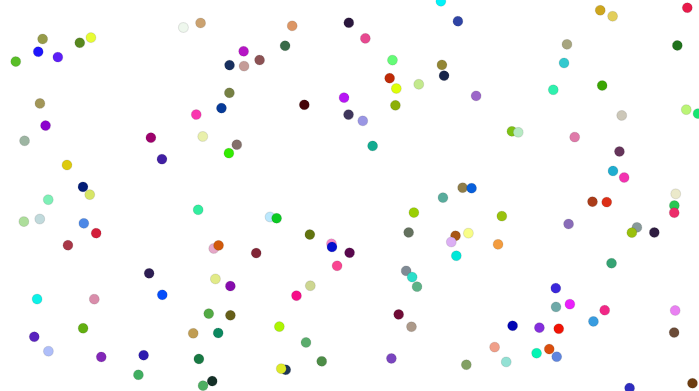

class: center, middle .title[Creative Coding and Software Design 3] <br/><br/> .subtitle[Unsupervised learning] <br/><br/><br/><br/><br/><br/> .date[Oct 2025] <br/><br/><br/> .note[Created with [Liminal](https://github.com/jonathanlilly/liminal) using [Remark.js](http://remarkjs.com/) + [Markdown](https://github.com/adam-p/markdown-here/wiki/Markdown-Cheatsheet) + [KaTeX](https://katex.org)] ??? Author: Grigore Burloiu, UNATC --- name: toc class: left # ★ Table of Contents ★ <!-- omit in toc --> 1. [Unsupervised learning](#unsupervised-learning) 2. [Practical example](#practical-example) 3. [Autoencoders](#autoencoders) 4. [Links - FluCoMa](#links---flucoma) 5. [Assignment](#assignment) <!-- Comment out the next slide if you don't want the Table of Contents link --> --- layout: true .toc[[★](#toc)] --- name: unsupervised-learning # Unsupervised learning .right-column[  - input: R G B colour - output: X/Y position ] .left-column[ group unstructured data - or arrange along e.g. [a grid](https://learn.flucoma.org/reference/grid/) find patterns in a dataset **no** labels - (to use as a guide) ] -- Two main operations: - [clustering](https://learn.flucoma.org/reference/kmeans/) - [dimensionality reduction](https://learn.flucoma.org/reference/umap/) --- name: practical-example # Practical example <iframe width="100%" height="400px" src="https://www.youtube.com/embed/-VVdF1s7AZ4" title="YouTube video player" frameborder="0" allow="accelerometer; autoplay; clipboard-write; encrypted-media; gyroscope; picture-in-picture" allowfullscreen></iframe> exercise: write down the processes being depicted --- ## UMAP in action <iframe width="100%" height="500px" src="https://www.youtube.com/embed/jdF4sW1aVDE" title="YouTube video player" frameborder="0" allow="accelerometer; autoplay; clipboard-write; encrypted-media; gyroscope; picture-in-picture" allowfullscreen></iframe> --- ## Video tutorials <iframe width="100%" height="500px" src="https://www.youtube.com/embed/4dsX5uRips8?list=PLLzzOXU4pTgJNv3XL_DRQO4N9xXc0pJEu" title="Building a 2D Corpus Explorer (Part 1)" frameborder="0" allow="accelerometer; autoplay; clipboard-write; encrypted-media; gyroscope; picture-in-picture" allowfullscreen></iframe> - see also: [self-organising maps](https://medium.com/@abhinavr8/self-organizing-maps-ff5853a118d4) ([ml.star](https://cycling74.com/articles/content-you-need-ml%C2%B7star), [MASOM](https://github.com/ktatar/MASOM)) --- # Autoencoders [<img style="width:100%" src="../attachments/autoencode-arch.png">](https://www.grammarly.com/blog/ai/what-is-autoencoder/) - [Autoencoders chapter](https://www.deeplearningbook.org/contents/autoencoders.html) in the Deep Learning book --- ## Why AE? [<img style="width:100%" src="../attachments/autoencoder.png">](https://towardsdatascience.com/auto-encoder-what-is-it-and-what-is-it-used-for-part-1-3e5c6f017726) -- 1. train network end-to-end with `inputs=labels` 2. "cut off" network in the middle, at the bottleneck 3. sample from the latent space - (like you would from a MLP Regressor) -- What are the use cases for this? What pros/cons versus the standard MLP Regression technique? -- - soon: [VAEs, GANs, et al](https://arxiv.org/pdf/2103.04922.pdf)! --- name: links---flucoma # Links - FluCoMa [FluCoMa Learn](https://learn.flucoma.org/) platform [teaching / learning guide](https://github.com/flucoma/flucoma-for-pedagogues/blob/main/flucoma-for-pedagogues.pdf) [Data Knot](https://rodrigoconstanzo.com/2025/10/data-knot-machine-learning-tools-for-low-latency-real-time-performance/) performance system by R Constanzo (previously SP-tools) - [GitHub repo](https://github.com/rconstanzo/data-knot) --- name: assignment # Assignment take your regression pipeline and adapt it into an autoencoder which mapping works better? why? <br/><br/> - further reading: [Latent Mappings: Generating Open-Ended Expressive Mappings Using Variational Autoencoders](https://nime.org/proc/nime21_66/) (Murray-Browne & Tigas, 2021)